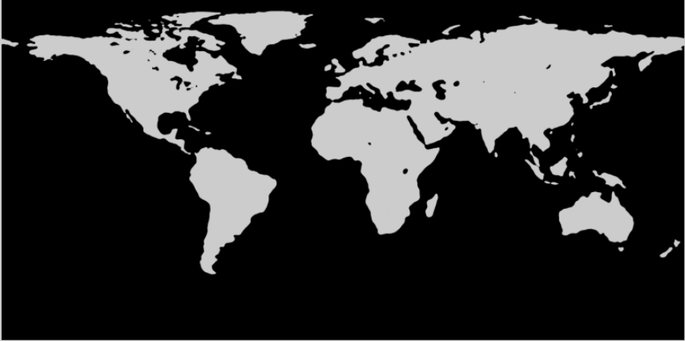
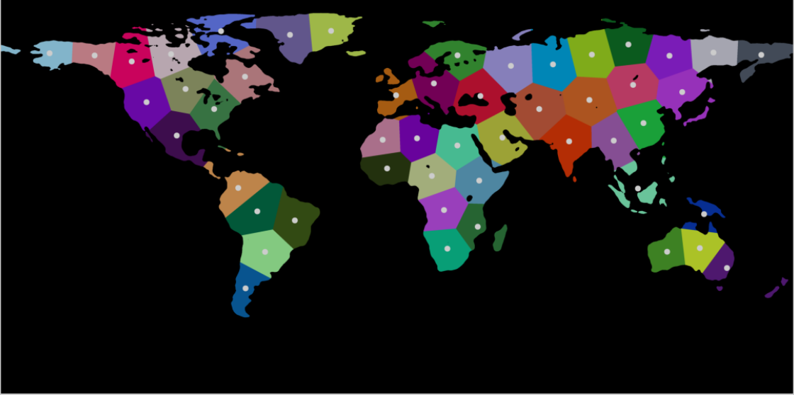
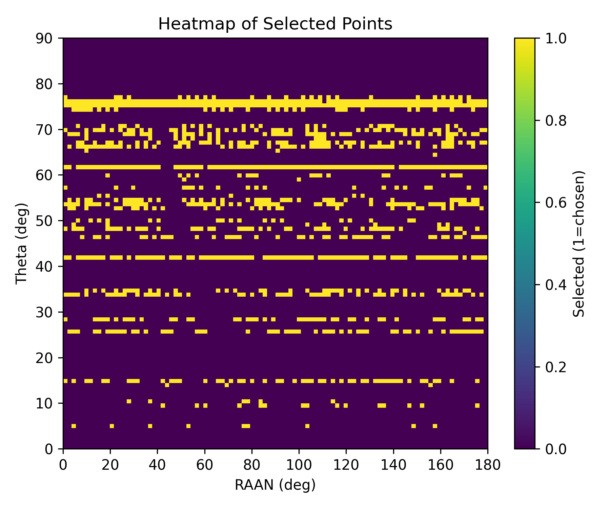
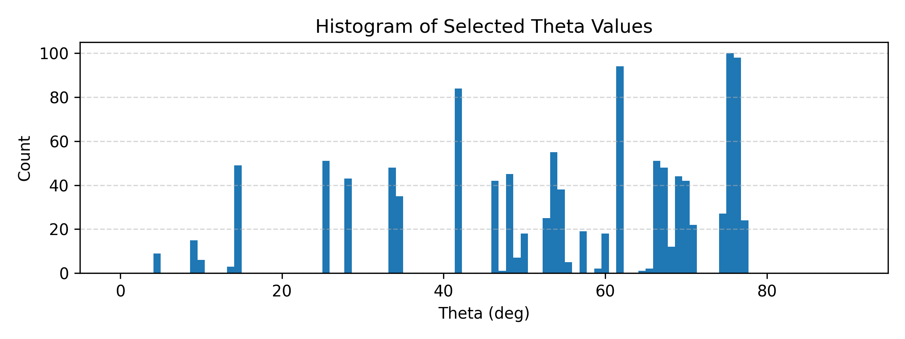
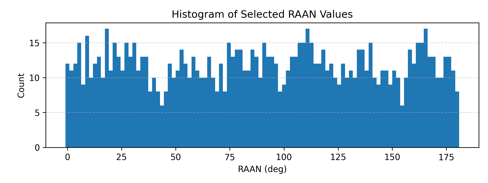
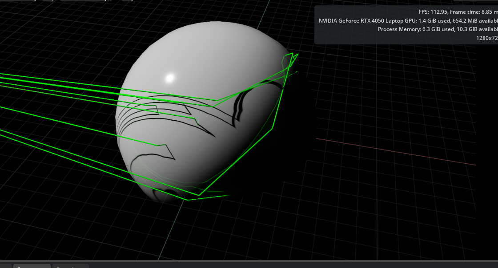

Space Robotics · Orbital Mechanics · GPU Simulation · Optimization · Python · PyTorch (CUDA) · PuLP/CBC · OpenCV · scikit-learn · NVIDIA Isaac Sim / USD
Course: ROB-GY 7863 — Space Robotics, NYU Tandon
// Live Isaac Sim demo — red satellite cuboids in their orbital rings, blue rectennas studding the Earth, green power beams streaming down to the ground stations.
1 · What This Project Is
This is a complete, multi-stage pipeline for designing a satellite constellation that beams power down to ground stations called rectennas (rectifying antennas). The question it answers is concrete: where do you place the ground stations, which orbits do you fly, and what is the fewest number of satellites that still keeps every station powered?
Answering that means stitching together orbital mechanics, GPU-accelerated simulation, mixed-integer optimization, a bit of computer vision, and a 3-D visualization — each stage feeding the next. The two tracks that make it up are (1) first-principles spacecraft dynamics and an orbital-geometry parametrization, and (2) the wireless-power-transfer study built on top of it: orbit propagation, satellite-to-rectenna visibility, constellation optimization, and animated power beams in NVIDIA Isaac Sim.
Scope note: the whole system runs in simulation — orbital propagation, a visibility model, and an optimizer, visualized in Isaac Sim. It is a constellation-design study, not flight software.
2 · The Pipeline End-to-End
Each stage produces an artifact that the next stage consumes — Earth map → rectenna coordinates → orbit grid → visibility tensor → optimized satellite set → routed beams.
Earth map ──► rectenna placement (CV) ──► 50 rectenna lat/lon
│
orbit grid (inclination × RAAN) │
│ │
▼ ▼
GPU visibility simulation (PyTorch / CUDA)
│
▼
MILP constellation selection (PuLP / CBC)
│
▼
multi-hop routing ──► Isaac Sim USD visualization3 · Spacecraft Dynamics, From First Principles
Underneath the constellation work sits a full 12-degree-of-freedom rigid-body spacecraft model, written from scratch in two independent formulations so each could check the other:
- Newton–Euler — translational + rotational equations of motion, including the gyroscopic term
−ω×(Iω), integrated in body-frame angular velocity. - Lagrangian — the same system in Euler-rate coordinates with a generalized inertia
J = BᵀIBand Coriolis/centrifugal coupling.
Both were cross-validated against an independent MuJoCo integration of the same system — a third-party check on the hand-derived dynamics. The model is nondimensionalized (characteristic length/time/velocity scales) so the integration stays well-conditioned at orbital magnitudes. Representative parameters: spacecraft mass 1600 kg, inertia diag(7429, 7429, 4608) kg·m², dt = 0.05 s, ~76,800 timesteps, initial radius ≈ 6371 km at ≈ 7.67 km/s.
Each satellite's world position is then composed from three rotation matrices — one per classical orbital element — the "Super-R matrix":
R = R_raan(Ω) · R_true_anomaly(ν) · R_inclination(i)
position_world = R · position_baseand a hierarchical class structure (fullConstellation → inclinedConstellations → raacConstellation → EarthTransmissionVehicle) sweeps angle lists to author an entire 3-D constellation as USD prims with physics.
4 · Where the Rectennas Go — a Computer-Vision Stage
The ground stations can only sit on land, and they should spread out evenly. To get 50 well-distributed land locations, I ran an Earth land/ocean map through a self-contained image-processing pipeline: averaging blur → grayscale + binary threshold (separating land from ocean) → resize and mask out the polar ice → K-Means (k=50) over the land pixels → Voronoi tessellation to carve the land into 50 service regions → equirectangular pixel→lat/lon mapping.


5 · Orbits & GPU Visibility
Satellite orbits are generated analytically from inclination and RAAN: an inclined orbit-plane basis is built (Rodrigues rotation of the polar axis), and positions propagate by Kepler's mean motion ω = √(GM/r³) at a 500 km altitude. Rectennas live in an Earth-fixed (ECEF) frame and co-rotate with the planet (ω_e = 2π/86400).
The core simulation asks, for every (satellite, rectenna, time) triple, whether the satellite is "visible" to the station via an angle-threshold test. That is a huge grid, so it is fully vectorized on the GPU with PyTorch/CUDA and evaluated in time chunks to bound memory — sweeping multi-day windows at second-level steps and producing a boolean visibility_mask of shape (1183, 50, T) plus per-satellite and per-rectenna visibility fractions.
6 · Choosing the Constellation — Mixed-Integer Optimization
Given which orbits can see which stations and how often, the design question becomes an optimization: pick the fewest orbital configurations such that every rectenna gets enough coverage. That is a mixed-integer linear program (MILP):
| Element | Definition |
|---|---|
| Decision vars | binary x_s ∈ {0,1} over a 100×100 inclination×RAAN grid (10,000 candidates) |
| Objective | minimize Σ x_s — the fewest satellites selected |
| Constraints | for each rectenna r: Σ_s coverage[s,r]·x_s ≥ threshold[r] (e.g. ≥ 85%) |
| Solver | CBC via PuLP (PULP_CBC_CMD), configurable MIP gap / time limit |
| Verification | a separate routine re-checks every per-rectenna coverage constraint and reports margins |
The solver chose 1183 orbital configurations out of the grid. Plotting which (inclination, RAAN) pairs were selected reveals the structure the optimizer found:



7 · Routing & the Isaac Sim Frontend
With the constellation fixed and the time-varying visibility known, the pipeline computes source-to-rectenna power-delivery paths over every timestep — a fast vectorized per-timestep selection of the lowest-cost relay through the visible satellite set (cost = ‖S − sat‖ + ‖sat − rect‖), producing a path matrix of 3-D coordinates.
The whole thing is then visualized in NVIDIA Isaac Sim: pure-USD mesh cuboids for satellites (red), rectennas (blue), and power beams (green), oriented via quaternions and animated together through cooperative asyncio coroutines that yield to the render thread (with frame batching — up to 2000 sats / 500 rects / 200 beam segments per UI tick — so large constellations stay smooth).

8 · Tech Stack & Scope
| Area | Techniques |
|---|---|
| Orbital mechanics | Kepler mean motion, inclined-orbit construction, Rodrigues rotation, ECEF/ECI geometry, parametric circular-orbit propagation |
| Rigid-body dynamics | Newton–Euler & Lagrangian formulations, gyroscopic coupling, generalized inertia, nondimensionalization, MuJoCo cross-validation |
| Optimization | mixed-integer linear programming (PuLP/CBC), binary set-selection under coverage constraints, independent solution verification |
| GPU computing | PyTorch/CUDA vectorization, time-chunked memory management, large-grid batch simulation |
| Computer vision | filtering, thresholding, K-Means, Voronoi segmentation, geometric coordinate mapping |
| 3-D simulation / viz | NVIDIA Isaac Sim, USD prim authoring, physics APIs, async animation |
A cross-disciplinary space-robotics pipeline: first-principles spacecraft dynamics (dual-formulation, MuJoCo-validated), GPU-accelerated orbital simulation, mixed-integer constellation optimization with independent verification, a computer-vision ground-segment placement stage, and a 3-D Isaac Sim visualization — implemented end-to-end in Python.